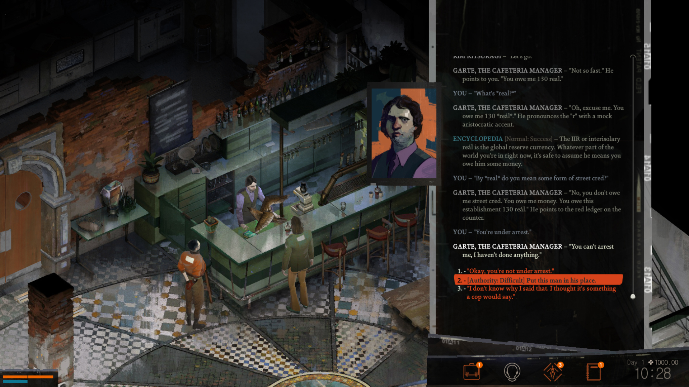
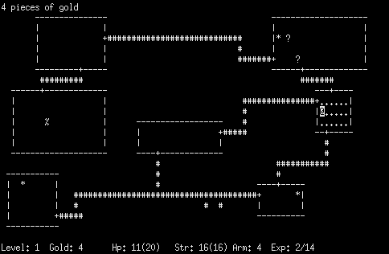
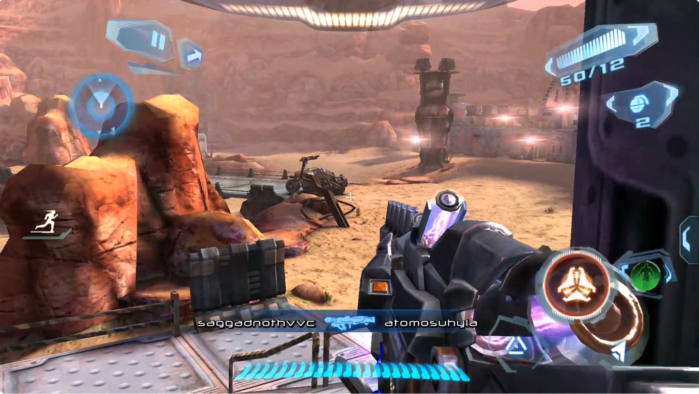
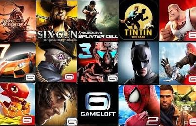
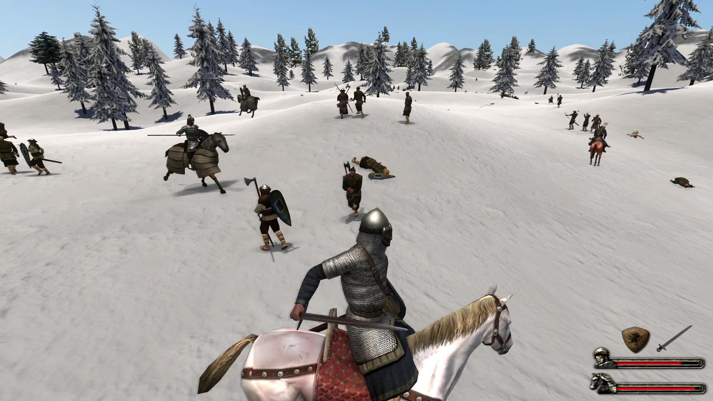

I'm someone who likes playing games, and I don't understand why playing games is sometimes given a negative label by society. For example, I'm also someone who likes working out. If someone heard that I do 3 sets of pull-ups every day, they might think, "Oh, Yongze is really self-disciplined." But if the same person heard that I play three rounds of Deadlock's Street Brawl mode every day, they might think, "Yongze is such an indulgent, weak-willed person" (just kidding, actually they'd think "what's Deadlock?"). There is no essential difference between the two situations; all I see is a person doing what he likes to do. Some people always like to ask about the meaning of something, for example, what is the meaning of playing games? Such questioning has no end: the meaning of work is to earn money, the meaning of earning money is to spend money, and in the end we inevitably come to ask what the meaning of a human being is, and what the meaning of production and consumption is. So I say: as long as it harms no one and you can bear the burden of it, anything that pleases you is an equally noble hobby. I love playing games, and I'm proud that I can find joy in playing games.
I'm a person with strong opinions. In this article I will mainly talk about my understanding of the core of games, my understanding of interaction, and, at the end, the games I usually play. I am also an indie game developer at present, and I hope that one day I can become known for my game work.
My Review of Video Games
I think the core of a game is interaction. It's said that modern video games are made up of visuals, sound, story and interaction. The visuals of modern video games borrow a lot from painting, photography and film cinematography; the stories of video games borrow from literature; sound borrows from music; only the interaction of video games originates from games themselves. Today's strategy games have no essential difference from the board and card games of the past, except that, thanks to the development of computers, they can do better mechanism design and numerical calculation. And from this angle, we can even use these four metrics to evaluate current video games.
Taking some games as examples,
Interaction-led games, such as the ancient games Pong, Tetris and Rogue, set simple rules, clear rewards and punishments, and intuitive, minimal visuals. This is the cornerstone of video games, and the ones that inherit this ancient tradition should be the many grid-based sandbox games, such as Minecraft, RimWorld and Terraria. They likewise have clear rules and fewer traces of human arrangement, relying more on emergence to provide the gameplay experience.

Interactive-movie games, such as Beyond: Two Souls and Detroit: Become Human by the studio Quantic Dream, or the Life is Strange series, should be seen as a combination of visuals, story and interaction. Considering that film is mainly made of visuals and story, calling these games interactive movies is quite apt. For them, visuals and story matter more. A paradoxical point is that if we give players more interaction, it means more branches, which brings higher production costs, or the developers have to consider cutting the playtime to control production costs. Speaking of which, I admire the approach of Detroit: Become Human: its main storyline is only about 10 hours, but it offers film-grade visual presentation and rich side-branch choices.
Interactive-fiction games, such as Disco Elysium (forgive me for calling it interactive fiction), are a combination of story and interaction. Disco Elysium holds up its visuals with an oil-painting art style and a small number of cutscenes, and then provides an extremely vivid and rich story with large amounts of voiced text. Considering that the production cost of text is actually much lower than film-grade visuals, Disco Elysium in effect solves the production cost problem of elaborate side branches mentioned above.
Rhythm games can be regarded as games made of sound and interaction. I think the interaction of rhythm games matters more than the sound, because rhythm games can also be played by pattern memorization, and for the same song the design of the chart still greatly affects the experience.
Turning to today's mainstream open-world games, such as GTA V, it is a game that downplays interaction and emphasizes visuals and story. GTA V inherits Rockstar's lineage, with exquisite animation, realistic movement and a ragdoll system, but its interaction is shallow. Most of the time the player experiences the joy of driving luxury cars in a virtual world, or the joy of shooting guns. This desire is not created by the game's own reward and punishment mechanisms but partly comes from desires left unfulfilled in reality. Of course, games of this type can use realism as a selling point to carry the player's early experience, or even the whole experience, but when players discover that the game is separate from reality, they feel empty, and then the game has to think of other ways to keep providing fun, such as online modes, achievements or mods. I remember that when I was little, in Grand Theft Auto: Vice City, I didn't follow the story and only liked driving around recklessly, but after playing for a while I felt very empty.
Although I keep stressing that the core of a game is interaction, a story-first or sound-first game is not necessarily a bad game. Imagine a game with top-tier visuals and story and almost optional interaction: it would be very close to a modern movie or TV series, and I think plenty of people would still pay for it, because the audience for movies is broad to begin with. Such games that downplay interaction are even further from being games, and by the same logic, players who like this kind of game are even further from being gamers. It's like making spaghetti bolognese: in theory the pasta should be the main part and the meat sauce a garnish; if we cooked it with a whole bowl of meat sauce and just one strand of pasta, that spaghetti bolognese would be closer to a bowl of meat sauce than a bowl of noodles, and the people who like this dish would be more like meat sauce lovers than noodle lovers. (No offense to meat sauce lovers; I like meat sauce too, and it actually sounds delicious.)
Interaction
What is interaction? Interaction is the exchange between the game and the player: a game should give different feedback according to the different actions the player takes.
For example, suppose we design a single-player FPS in which the player must shoot the bad guys opposite with a gun. If shooting different parts of a bad guy's body (such as the head, arms or legs) deducts the same fixed amount of health each time, that is a poor design, because the game isn't giving different feedback according to the player's different actions. Although the player is fighting a humanoid thug, the effect is more like shooting at a humanoid target, which of course is boring.
Same example: if shooting the thug's head does more damage, shooting the torso does moderate damage, and shooting the limbs does little damage, that is a somewhat better design, because the game starts to reward the player for shooting the head and punish them for shooting the limbs, and the player will deliberately practice aiming at the head in pursuit of high damage.
Now consider: in the same example, if shooting the thug's head does more damage, shooting the torso does moderate damage, shooting an arm can knock the weapon from their hands, and shooting a leg can stop them from moving, is that a better design? In my view, it depends on what the game's goal is. If the goal is to kill all the thugs as quickly as possible, this design does not mean much, because it is clear that shooting the head and torso for maximum kill efficiency has already become the optimal solution. If I were to set the game's goal, I might change it to: while keeping yourself safe, control as many thugs as possible without killing them. In that case, shooting arms becomes the theoretical optimal solution; against a fast-moving thug with a dagger, shooting the legs may be a good choice; and against a high-threat thug with a heavy weapon, to protect themselves the player may be forced to make headshots.
As I said, interaction should be the core of a game, and visuals should serve interaction. For example, a thug wearing body armor may have higher bullet resistance in the corresponding body area. The story should also serve interaction: if we first design the mechanic that shooting an arm disarms, then perhaps the game goal should be to subdue the thugs within range, and the story should perhaps be about a SWAT counterterrorism operation rather than two armies in battle.
Games I've Played
In primary and middle school I played games on my dad's iPhone. The ones that left the deepest impression on me were probably the various mobile games by Gameloft that borrowed from classic IPs, including N.O.V.A. 3, Asphalt 7: Heat, Six-Guns and The Amazing Spider-Man. I also played the ingenious little games of the time, including Where's My Water?, Bad Piggies, Temple Run, Monument Valley, Fruit Ninja, Plague Inc., Smash Hit and Brothers in Arms, and more niche ones such as Party Hard Go. Mentioning these names, I can't help feeling it really was a golden age: you could see a great many mobile games making full use of the phone's touch screen and motion sensors, with cleverly designed mechanics running on machines whose capabilities were severely limited at the time. The dazzling mobile games of this golden age undoubtedly enriched my childhood. Back then I used the Haima app store to download pirated iOS games, which let me sample widely. At the same time I heard about a great many famous PC games, including Rainbow Six, Counter-Strike and Resident Evil. Troubled that I had no access to these PC games yet, I could only frantically look for substitutes on my phone. I didn't know about the many PC game companies and their works back then, so these famous IPs were always shrouded in a layer of mystery. From my perspective, these IPs were like what explorers in the Age of Discovery felt on hearing of China or India: a far shore full of gold and spices, filling you with endless anticipation. Yet today, with a high-performance gaming laptop, I lack the desire to explore.


After my older cousin showed me Grand Theft Auto: Vice City on his laptop, my heart was touched. I hadn't heard of the concept of open-world games then; I just thought it was so interesting that a character could run around such a big map. In my little head, those worlds seemed truly real, full of endless possibilities and not just models, and the characters in the games were close to real people who should be able to talk and walk and have lives of their own, not just scripted performances and skeletal animation. Right after that I began to dig into downloading, installing and playing PC games. I used Kuaiwan Game Box, together with Kuaikuai and Kuaiba game boxes, to get comprehensive download channels. Kuaiwan Game Box offered a very important feature: it could check whether the computer's hardware met a game's requirements and help install missing files and drivers, so it became my main battlefield for downloading games. At that time I played Mount & Blade: Warband, Half-Life 2, Romance of the Three Kingdoms XI: Power Up Kit, Prototype, Grand Theft Auto: San Andreas, Civilization V, Spore and a slew of other games, and began to exchange gaming experience with classmates a lot. I didn't know about game walkthroughs then, so every strategy spread by word of mouth among classmates, such as how some levels of Romance of the Three Kingdoms XI required recruiting troops almost every turn, or how, in Mount & Blade: Warband, you manage lord relations, run factories and send out caravans. I also used Kuaikuai's multiplayer lobby to play multiplayer Minecraft with my classmates. In my memory, that stretch of time glows with brilliant gold, so much so that even as I write this article now I doubt: did the me after that truly love playing games the way I did back then? Or am I merely repeating the same behavior, trying to find that joy of those years again?

I also got into online games at that time. I played Nizhan, and on mobile Battle of Balls, Clash of Clans and a whole group of MOBA games: Vainglory, Fight for Freedom and Honor of Kings. After being washed through the long river of history, Honor of Kings gradually became a national-level mobile game, but compared with other MOBA games it's not that novel.
From starting university until today, I've played some single-player and multiplayer games on Steam. I've played over 1,000 hours each of Valve's CS:GO and Deadlock, over 500 hours of Embark's The Finals, and about 400 hours of RimWorld. In addition, I've played games I heard about as a kid, or sequels of games I played, such as Mount & Blade II relative to Mount & Blade: Warband, Civilization VI relative to Civilization V, and so on. But many sequels, apart from a visual overhaul, cannot really be called innovative in content, and without the old mods' support they are even a regression in gameplay. Oh my, I find I have become an astonishingly old man, a relic living in old times, and I can't help beginning to understand those old people in the countryside who go on and on about the deeds of their youth, because I am turning into exactly the same figure.
My playtime on Steam is 4,700 hours, and if I count all the pirated games I've played, the total is probably around 8,000 hours. That means if I treated playing games as a job at eight hours a day, it would still take 3 years to accumulate that much time. Playing games has in fact become a vividly colored part of my life.